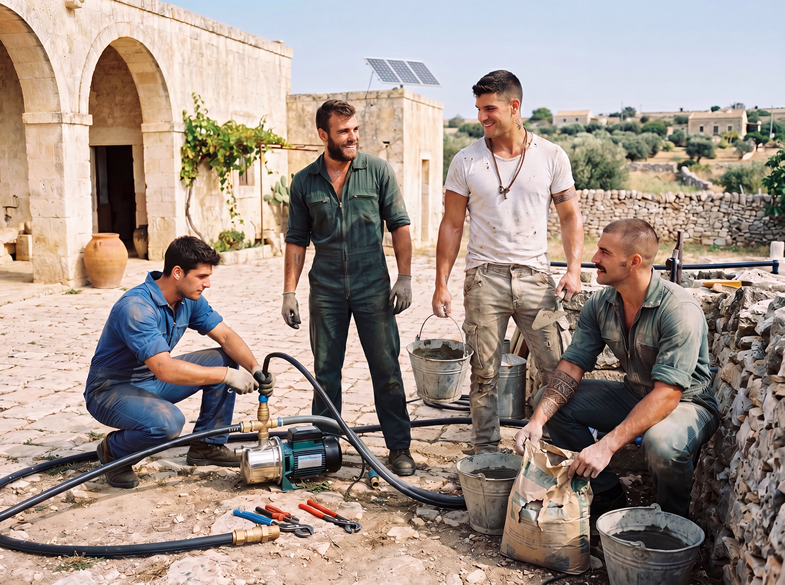

Nel Baglio San Michele l’autonomia energetica è concepita come un’estensione naturale dell’autonomia alimentare. Si tratta di soluzioni sobrie, riparabili e perfettamente integrate nel contesto storico della masseria e del paesaggio ibleo.
Principi fondanti
- • Rispetto assoluto dell’estetica e del patrimonio storico
- • Sobrietà e Slow Living come primo passo verso l’autonomia
- • Chiusura dei cicli dell’acqua e dell’energia all’interno della proprietà
- • Tecnologie appropriate, low-tech e riparabili localmente
- • Valorizzazione delle soluzioni tradizionali (cisterne storiche, camini, gestione della legna)
Metodi e soluzioni concrete

Le soluzioni adottate sono sobrie e rispettose del contesto: pannelli fotovoltaici totalmente dissimulati, pompaggio dell’acqua alimentato da energia solare, sistemi di depurazione dell’acqua per uso alimentare, riscaldamento tradizionale con camini e stufe a legna. Non sono previsti impianti eolici per rispetto del paesaggio e del silenzio del territorio ibleo.
Realizzazione progressiva per fasi

Fase 1 (2026-2028) – Autonomia del Baglio storico
Nel Baglio fortificato restaurato si realizza l’autonomia energetica e idrica di base per i primi 14 appartamenti e gli spazi comuni, con sistemi di pompaggio, depurazione dell’acqua, riscaldamento tradizionale e fotovoltaico totalmente invisibile.

Fase 2 (post-2028) – Autonomia dell’intera proprietà
Con il restauro e la ricostruzione delle 3 case coloniche e della parte crollata dell'ala est si completa l’autonomia per l’intera comunità. Le nuove abitazioni sono dotate di sistemi energetici discreti collegati a una microgrid comunitaria.
Formazione e corsi pratici

Il Baglio organizza corsi aperti ai residenti e ai candidati:
- • Gestione e manutenzione dei sistemi di pompaggio e delle cisterne storiche
- • Depurazione dell’acqua per uso alimentare con tecniche appropriate
- • Gestione sostenibile della legna da ardere e conduzione di camini tradizionali
- • Integrazione discreta di energia solare in contesti storici e rurali
- • Efficienza energetica passiva degli edifici
L’autonomia energetica del Baglio San Michele è discreta, tradizionale nel cuore e innovativa nella sostanza. Non altera la bellezza della masseria e del paesaggio, ma offre alle famiglie una reale indipendenza idrica ed energetica, in armonia con la fede, la cultura siciliana e la responsabilità verso le generazioni future.